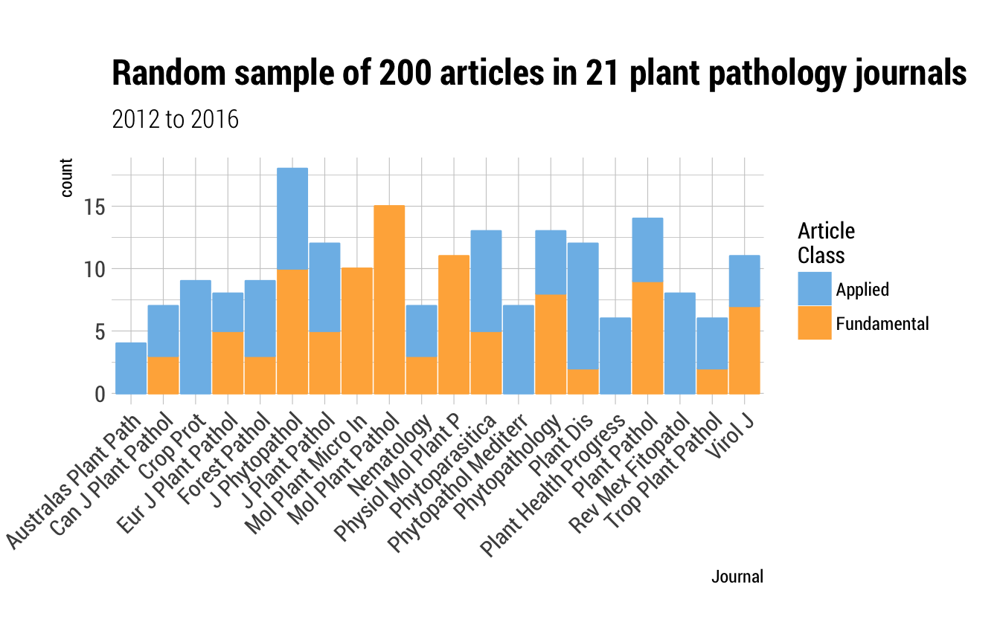
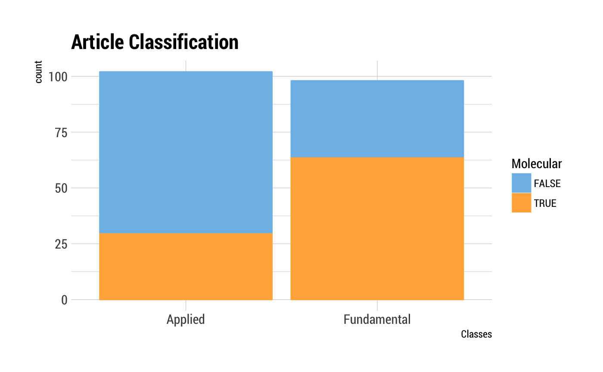
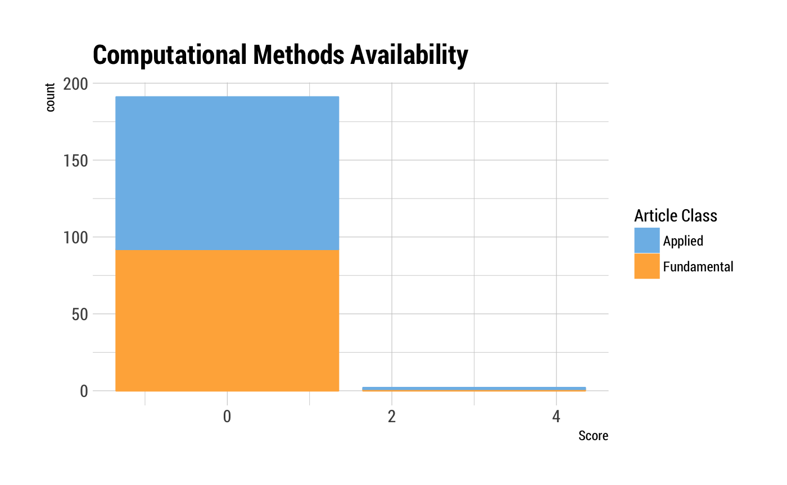
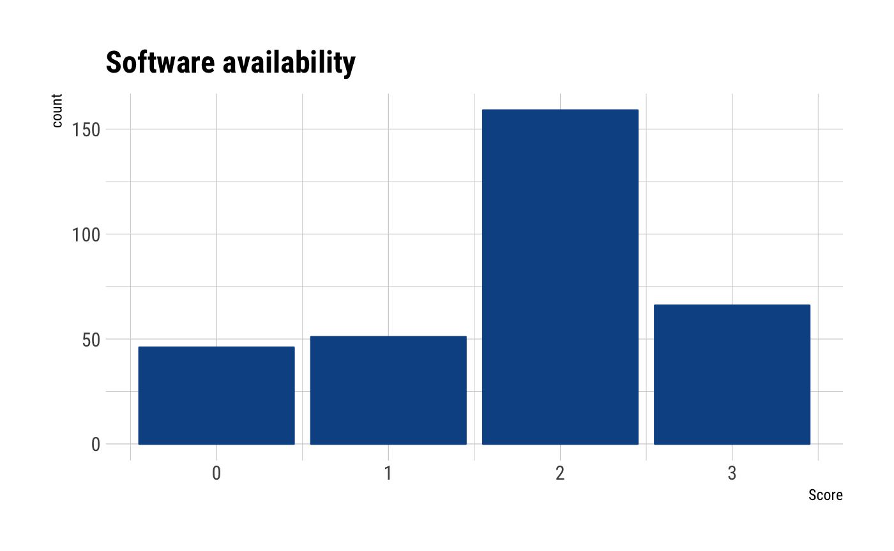
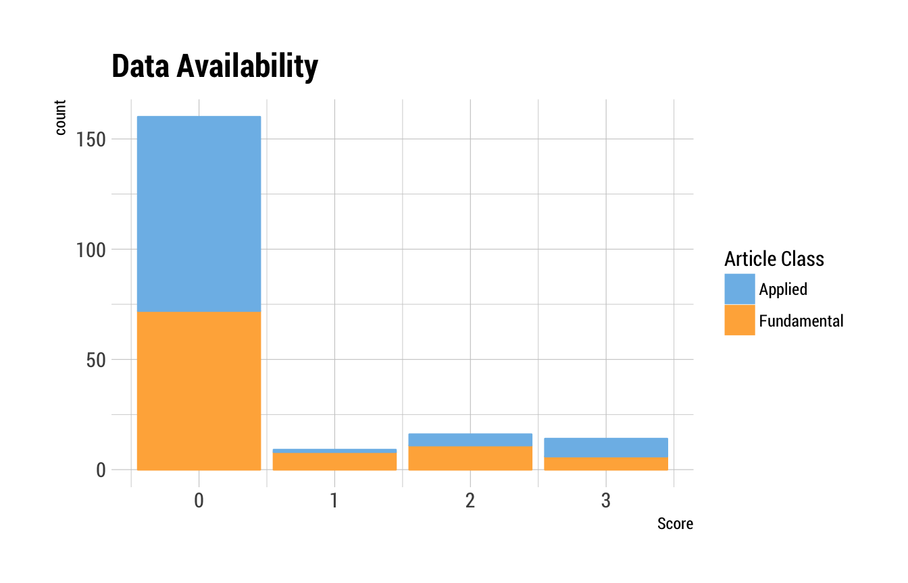
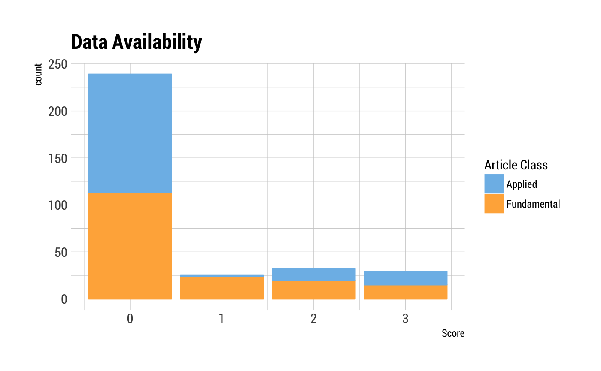
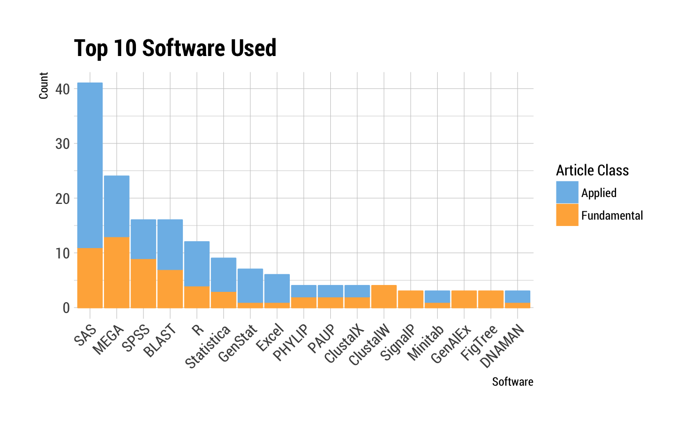

vignettes/IEW12_slides.Rmd
IEW12_slides.Rmdlibrary(hrbrthemes)
library(ggthemes)
library(dplyr)
#>
#> Attaching package: 'dplyr'
#> The following objects are masked from 'package:stats':
#>
#> filter, lag
#> The following objects are masked from 'package:base':
#>
#> intersect, setdiff, setequal, union
library(ggplot2)
library(gsheet)
library(magrittr)
library(tidyr)
#>
#> Attaching package: 'tidyr'
#> The following object is masked from 'package:magrittr':
#>
#> extract
theme_set(theme_ipsum_rc())rrpp <- gsheet2tbl(
"https://docs.google.com/spreadsheets/d/19gXobV4oPZeWZiQJAPNIrmqpfGQtpapXWcSxaXRw1-M/edit#gid=1699540381"
)rrpp %>%
ggplot(aes(x = abbreviation,
fill = art_class
)) +
geom_bar() +
scale_fill_few()+
scale_color_few()+
labs(x = "Journal",
title = "Random sample of 200 articles in 21 plant pathology journals",
subtitle = "2012 to 2016",
fill = "Article type") +
theme(axis.text.x = element_text(angle = 45, hjust = 1))
rrpp %>%
ggplot(aes(x = art_class,
fill = molecular
)) +
geom_bar() +
scale_fill_few()+
scale_color_few()+
labs(title = "Article Classification", x = "Classes", fill = "Molecular") 
Are analysis scripts and any special software used available for inspection and reuse to reproduce the work? Readily available (3) to not mentioned (1).
rrpp %>%
ggplot(aes(x = comp_mthds_avail,
fill = art_class
)) +
geom_bar() +
scale_fill_few()+
scale_color_few()+
labs(title = "Computational Methods Availability",
x = "Score",
fill = "Article class") 
Is the software readily available? Open source (3, good) to proprietary and $$ (1).
rrpp %>%
ggplot(aes(x = software_avail,
fill = art_class
)) +
geom_bar()+
scale_fill_few()+
scale_color_few()+
labs(title = "Software Availability",
x = "Score",
fill = "Article class") 
Is the data readily available from a proper archiving repository, e.g. Zenodo or Dataverse (3) to not mentioned (1).
rrpp %>%
ggplot(aes(x = data_avail,
fill = art_class
)) +
geom_bar() +
scale_fill_few()+
scale_color_few()+
labs(title = "Data Availability",
x = "Score",
fill = "Article class") 
Was the software used properly cited? All versions and packages cited (3) to not described what was used (1).
rrpp %>%
ggplot(aes(x = software_cite,
fill = art_class
)) +
geom_bar() +
scale_fill_few()+
scale_color_few()+
labs(title = "Software cited",
x = "Score",
fill = "Article class") 
What are the 10 most popular software packages used?
rrpp <-
rrpp %>%
unnest(software_used = strsplit(software_used, ", "))tab <- table(rrpp$software_used)
tab_s <- sort(tab)
top10 <- tail(names(tab_s), 17) # checking the table, there are several ties
top_software <- subset(rrpp, software_used %in% top10)
top_software$software_used <- factor(top_software$software_used,
levels = rev(top10))
top_software %>%
ggplot(aes(x = software_used,
fill = art_class
)) +
geom_bar() +
scale_fill_few()+
scale_color_few()+
labs(title = "Top 10 Software Used", x = "Software", fill = "Molecular")+
theme(axis.text.x = element_text(angle = 45, hjust = 1))